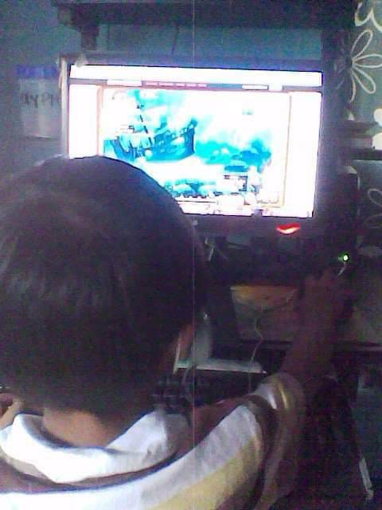
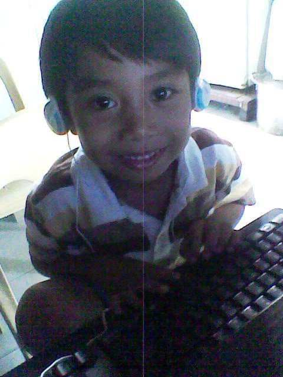

Hello there!, I'm Ichiro A. Plata
Aspiring IT Professional


Since childhood, I have been captivated by the world of computers and gaming. This early fascination sparked a lifelong passion for technology. Now, as a 19-year-old, I continue to be drawn to the limitless possibilities of technology. My curiosity fuels my desire to learn and explore, constantly seeking new challenges and knowledge. With a passion for innovation, I aspire to create solutions that not only benefit individuals but also contribute to a better world.
By aligning my work with SDG Goal 5: Gender Equality, I aim to create solutions that amplify women's voices, dismantle barriers, and ensure equal opportunities for all.